APPROACH: WHERE IS THE LESION, WHAT IS THE LESION?
Where is the lesion?
The nervous system is vast, but can be divided into sections which have their own distinct features when affected by disease. These features and the distribution of symptoms allow us to localise the lesion.
All of the below are lesion sites, and all have their own recognisable features.
It should also be borne in mind that ‘where’ may offer clues to ‘what’- as certain sites and distributions are suggestive of a particular type of lesion (especially vascular lesions, which conform to identifiable territories). In reality the two questions overlap.
There are three features that indicate cortical disease:
There are many cortical regions with different functions. Lesions disrupt these, and depending on the locus, may produce paralysis, dysphasia, visual loss, inattention, or higher-order cognitive problems - such as issues with calculation, reading or face recognition. Pathological studies and other techniques have mapped the cortex out in detail and cortical lesions can be localised clinically with sufficient knowledge and skill.
Examples include expressive dysphasia from lesions in the the left inferior frontal gyrus (in most people), receptive dysphasia from lesions in the posterior aspect of the left superior temporal gyrus, and a macular-sparing homonymous hemianopia from lesions in the occipital pole. Hemispatial neglect suggests right parietal pathology. Inability to recognise faces arises from lesions in the fusiform gyrus (inferior temporal lobe). It is unusual to see such deficits from deeper pathology (e.g. white matter).
Other deficits are less specific to cortex, particularly the primary modalities of strength and sensation. While cortical lesions may cause contralateral paralysis and/or numbness, so might a deeper lesion in the subcortical white matter (or further down, e.g. brainstem or spine) - the same consequence arises from axon disruption at any point on its path.
However, concerning motor and sensory deficits, the distribution is helpful. Cortical lesions often only partially affect a region of the body. The motor homunculus supplies one side of the body from face down to toes, but cortical lesions tend to only affect a region, e.g. hand, face and arm. This is in contrast to deeper sites such as the internal capsule in which a small, pinpoint lesion may damage fibres to the entire hemibody, as is seen with lacunar infarctions. Exactly the same is true for sensation.
Sensory deficits due to cortical disease may have special features - if primary sensation is preserved (i.e. the relevant area is not anaesthetic), the patient may lose ability to interpret sensory information. Two examples are:
Cognitive deficits may be seen in cortical disease although subcortical and deep processes can also affect cognition. Vascular dementia is one of the commonest forms of dementia globally and often features extensive subcortical white matter damage. The thalamus is a complex relay structure involved in many networks including those underlying cognition; lesions can affect these.
Seizures always indicate a cortical problem - they originate from neurons in the grey matter. Seizures are not seen in white matter or deep grey matter nuclei lesions, unless there are consequences that directly affect the cortex - for example extensive oedema, distorting cortical tissue. Focal seizures reflect a given area of cortex being affected, and localisation is possible, for example clonic jerking in a limb contralateral to the motor strip. Some seizures start focal but then generalise; a generalised seizure does not localise, but identifying a focal prodrome can enable localisation of a culprit lesion.
Anosoagnosia is a peculiar but characteristic element of cortical disease: the patient may not be aware of the problem. The brain ignores or denies awareness of it. This is particularly true of visual impairment from cortical lesions - in contrast to visual loss from ‘eye’ causes, in which patients are very aware of the problem, those with cortical causes may not be aware. The manifestation may instead be bumping into objects (e.g. while driving). Hence some deficits are identified as signs or behavioural changes rather than primarily reported as symptoms. In extreme cases, despite blindness from bilateral cortical damage (e.g. infarctions), the patient confabulates that they can still see. They are not lying - they truly believe they can, and cannot be convinced otherwise.
This covers a broad region, from immediately below the cortex to deep white matter tracts. Many different symptoms may arise from subcortical lesions. These lesions can be large, but even small subcortical lesions can be devastating.
It is worth starting by stating that small lesions in some areas may produce no identifiable features. Small (lacunar) infarctions are one example; demyelinating plaques due to MS are another. Asymptomatic white matter lesions are common on imaging. They may add up if extensive however and can be associated with cognitive impairment as well as physical problems.
When a small subcortical lesion does affect an area that can produce symptoms, this is usually by affecting a tightly packed white matter tract, with wide-ranging consequences. A lesion of the posterior limb of the internal capsule acts as a ‘precision strike’ on a key area, causing hemiparesis and hemianaesthesia.
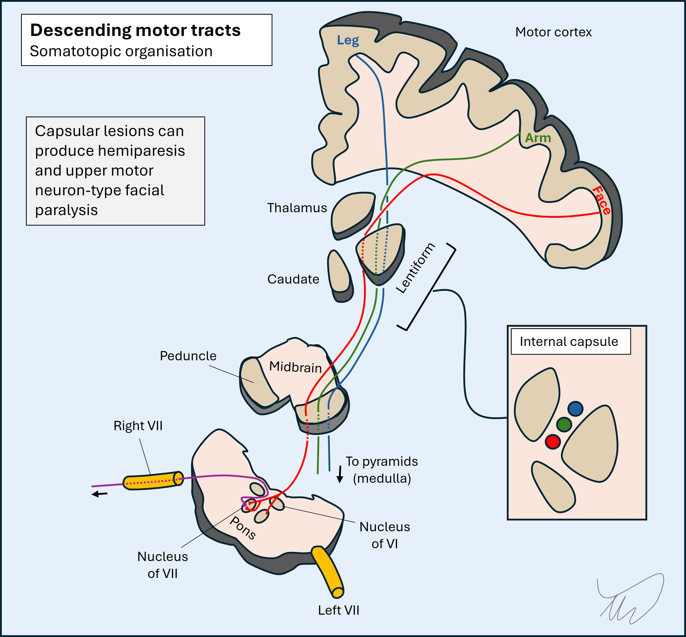Because the tracts are mostly quite tightly packed, the effects of lesions are generally extensive; it would be unusual for a lesion to selectively weaken the leg and spare the arm and face for example, in contrast to a cortical lesion, unless in the spaces immediately deep to the cortex. Monoparesis is very unusual in subcortical lesions. This tendency to affect a wide body area has localising utility.
These circulate cerebrospinal fluid (CSF). Their lining is not made from eloquent brain tissue, in contrast to cortex, so lesions may not have symptoms. When symptoms do arise they are due to obstruction of the CSF circulation.
The main consequence of this is hydrocephalus, with dilatation of the ventricles (depending on the level this may also include the 3rd and 4th ventricles), leading to a combination of features. If rapid and acute, there is a severe rise in intracranial pressure (ICP), with headache, papilloedema, vomiting and coma, which is life-threatening. If more gradual, the pressure is better tolerated but gradually causes problems - typically with lower limbs (a characteristic ‘magnetic’ gait), in addition to causing cognitive impairment and urinary incontinence.
Various pathologies can affect the ventricles, but important ones include intraventricular haemorrhage, tumours, and infection (particularly rupture of an abscess into the ventricles; a hugely dangerous situation).
The basal ganglia are deep grey matter structures which form a complicated, interconnected web. They have a range of functions and are best known in relation to movement disorders - basal ganglia pathology produces problems such as rigidity, tremor, chorea, ballism and dystonia. The best-known is Parkinson’s disease, a very common disorder. Other lesions in this region can produce new-onset unilateral movement disorders such as hemiballismus due to stroke.

The thalamus is a giant relay station with many nuclei receiving and projecting axons. It interacts with extensive areas including cortex, basal ganglia and cerebellum. Thalamic lesions produce all kinds of deficits and can be confusing to localise. Examples include problems with cognition, speech, movement, visual fields, sensation, and even coma. One well-known thalamic syndrome is contralateral hemibody pain, typically burning, arising over time - particularly after stroke.
The brainstem is anatomically complex, with dozens of nuclei, multiple white matter tracts ascending or descending, and extensive connections to and from the cerebellum. It is a small area, with many structures packed tightly, so unlike subcortical regions, there is little room to tolerate lesions without producing symptoms. A wide variety of deficits can arise, and there are many described brainstem syndromes reflecting damage to a group of structures in a given region.
Thankfully, to approach brainstem problems clinically does not require encylopaedic recall of this anatomy. There are simplifying rules which help us recognise a brainstem lesion, and thereafter, localise it in 3 axes (up/down; front/back; left/right and medial/lateral).
Note - the proper anatomical terms are caudal, rostral, ventral and dorsal. Humans are bipedal and spend our days upright, so I am OK with the use of the terms inferior, superior, anterior and superior if it enables understanding - many resources use these for clinical neuroanatomy, and they are used for every other body system.
Crossed signs (and lateralisation)Almost all cranial nerve nuclei, their projecting fascicles within the parenchyma, and the nerves they project, are ipsilateral to the side of the head/neck they innervate. Any crossing happens above the nucleus (e.g. trigeminal nerve sensory axons travelling to the thalamus). The one exception is trochlear (IV), which crosses behind the midbrain then loops forward to travel to the orbit.
On the same side as the nerves, fascicles and nuclei are the ascending/descending corticospinal and sensory pathways which innervate one side of the body. These all cross over lower down, whether on entry to the spine (spinothalamic) or in the caudal medulla (dorsal column and corticospinal).
Hence a given lesion might produce an ipsilateral cranial nerve deficit (or several) and contralateral deficits in the limbs - so called ‘crossed’ signs. If you see this pattern, immediately think ‘brainstem’ - you will likely be correct, unless the patient has multifocal lesions.
There are multiple unilateral brainstem lesion patterns featuring an ipsilateral cranial nerve palsy and contralateral sensory or motor deficit, with several shown below (figure). Eponyms describe these, but they are old-fashioned, and it is better to recognise the key anatomy involved. Knowing the cranial nerve deficit is ipsilateral tells us the side of the lesion. We can also use the nerve to tell us the lesion’s latitude within the brainstem (see below).
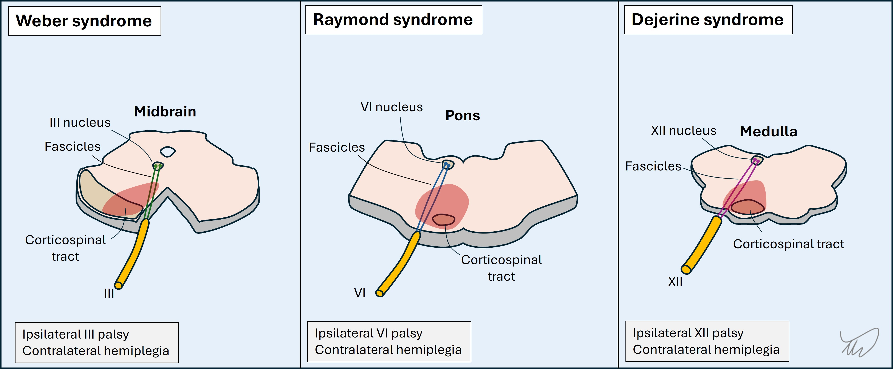 Medial vs lateralIn addition to lateralising the lesion we can tell its position relative to the midline based on the structures involved. A general principle is that most motor-predominant cranial nuclei and their projecting fascicles are medially sited (III, IV, VI, VII, XII) while sensory-predominant ones are more lateral (V, VIII).
This is useful, as medial brainstem lesions are motor-heavy in terms of the nerve affected as well as the corticospinal tract, while lateral ones are more sensory-heavy, and they usually spare the corticospinal tracts.
This principle is not always true for the nerve leaving the brainstem, which may take a more lateral course - it relates to parenchymal damage.
LatitudeThe nerves are numbered by position, rostral to caudal, with higher numbers at the bottom of the brainstem. (Figure)
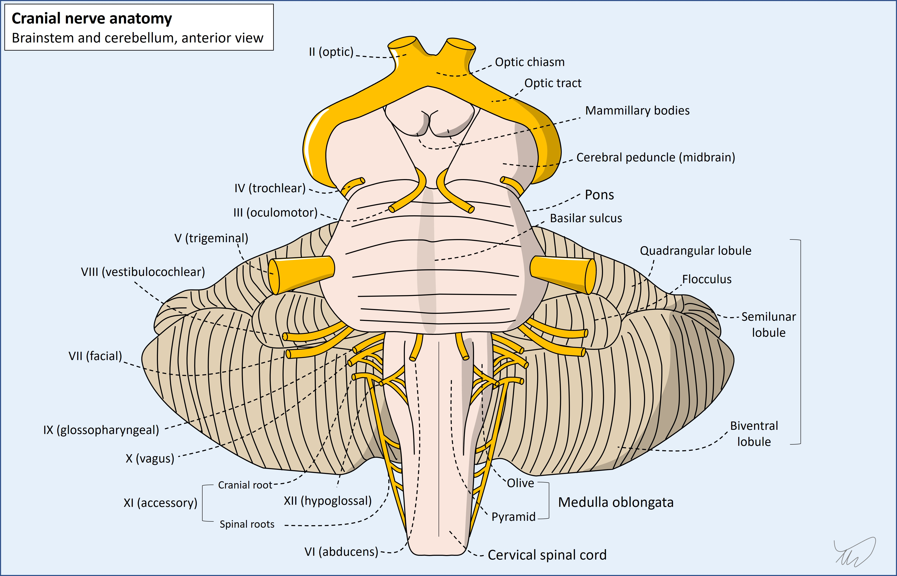
We can establish the ‘height’ of a brainstem lesion in the rostral-caudal axis based on the nerves involved.
Antero-posterior locationThe ascending and descending tracts are organised such that the corticospinal tract is the most ventral, the spinothalamic tract is dorsal and lateral, and the medial lemniscus is somewhere central and medial. Most cranial nerve nuclei are within the dorsal brainstem, behind the corticospinal and medial lemniscus tracts.
This is helpful, as corticospinal tract involvement suggests a more anterior lesion, while nuclear cranial nerve disorders and absent corticospinal features suggest posterior. A cranial nerve disorder with contralateral corticospinal tract involvement implies the fascicle as it travels anteriorly, with example images shown above.
The cerebellum is behind the brainstem and the peduncles which connect them are within the dorsal and lateral brainstem. Damage causes ipsilateral ataxia. If ataxia is present with an ipsilateral cranial nerve signs it suggests a dorsal and lateral lesion.
Gaze palsiesThe brainstem controls multiple aspects of eye movements. III, IV, and VI originate in it and they move individual eyes in a given direction. Conjugate gaze requires simultaneous action in muscles on either side - the same ones for vertical and opposite ones for horizontal.
Vertical gaze is directed by midbrain structures, and horizontal gaze by pontine structures. There are supranuclear structures which activate key nuclei for conjugate gaze, e.g. the paramedian pontine reticular formation (PPRF) for horizontal gaze. There is also a large internuclear tract, the medial longitudinal fasciculus (MLF), which connects the nuclei allowing conjugate movements.
In addition to other cranial nerve signs, ataxia, sensory and motor deficits, conjugate gaze palsies offer clues to localisation. Midbrain lesions may limit up and/or down gaze, and pontine lesions may limit lateral gaze. These further enable localisation in the vertical plane, and for the pons, show the side of the lesion: PPRF damage leads to paralysis of ipsilateral conjugate gaze. (diagram good). The structures involved are dorsal so conjugate gaze palsies indicate a dorsal lesion.
MLF lesions cause internuclear ophthalmoplegia; the ipsilateral eye can't adduct during an attempt at conjugate gaze to the opposite side.
The most devastating of all brainstem-related presentations is ‘locked in’ syndrome due to a bilateral central pontine lesion. The corticospinal and corticobulbar tracts are damaged, so the patient cannot move limbs or speak. The PPRF is damaged so horizontal eye movements are not possible. Midbrain centres are intact, so vertical eye movements remain possible, enabling communication. Major causes of this include stroke and osmotic stress-induced demyelination.
There are 12 cranial nerves on each side, and some have multiple functions, so a wide range of symptoms and signs can arise from lesions.
There is no substitute for having a basic sense of their anatomical pathways, including where they connect with the brainstem and their exit from the skull, and for some nerves their pathway outside the skull (e.g. the facial nerve through the parotid, or the hypoglossal in the carotid sheath).
Some also have important ‘vulnerable sites’ we must know - particularly the oculomotor nerve, which has two sites of relevance, both indicating neurosurgical emergencies:
An additional skill is identifying partial deficits. Not everything is full-blown. Many III palsies are mild, sparing the pupil and only partially restricting movement. Mild VII palsy may be less obvious - in the first 24 hours of Bell's palsy there may only be subtle signs in the eyes (e.g. widened palpebral fissure, loss of the nasolabial fold).
While it may be straightforward to recognise a lone cranial nerve palsy, localising the site of the lesion (in terms of where in the nerve’s length it lies) may be difficult. Most nerves do not give off multiple branches until a quite distal point in their path, unlike the peripheral nerves in the limbs, so we often cannot tell how proximal the lesion is based on the branches involved.
This is even more difficult in the case of the abducens nerve (VI), which may be affected due to increased intracranial pressure (ICP) arising from a remote lesion such as a brain tumour - hence it can be a ‘false-localising sign’. It reflects pathology - but nowhere near the nerve itself.
The most useful aid to localisation of a cranial nerve palsy is when other adjacent structures are involved. We have already looked at this with the brainstem. One or more cranial nerves being involved with an adjacent long tract (sensory, corticospinal or MLF) helps us localise the lesion.
Similarly, cerebellar signs co-occuring can indicate a lesion affecting one of:
A good example of the first is lateral medullary syndrome (Wallenberg). The inferior cerebellar peduncle is involved so ipsilateral ataxia is present, in addition to a range of cranial nerve deficits - V (loss of facial pinprick sensation), VIII (vertigo, nystagmus), and X (hoarseness, dysphagia).
The classic example of the second is a cerebellopontine angle (CPA) lesion, with ataxia accompanying deficits in one or more of V, VII and VIII - and sometimes, if a large lesion, IX, X and XI.
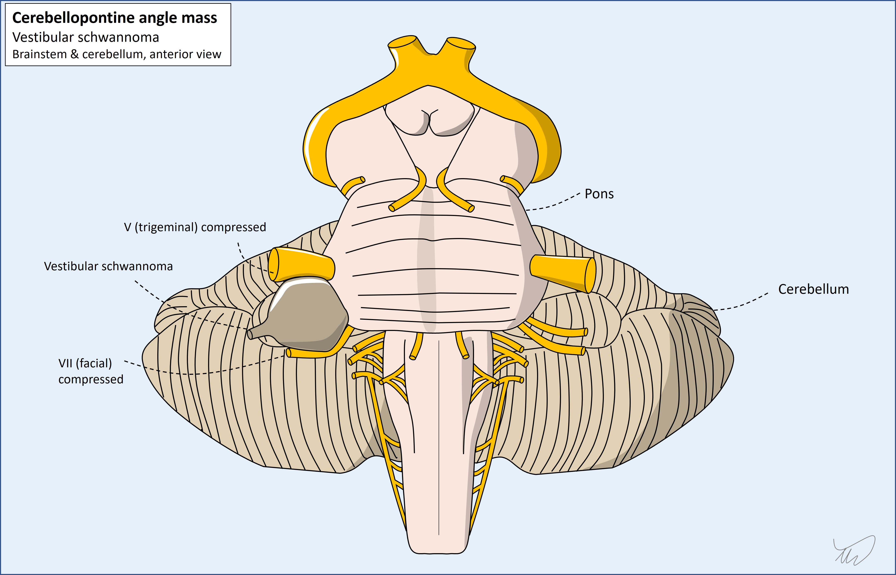In addition, some cranial nerves run together at some stage in their path. If we see collections of cranial nerve palsies, this suggests a lesion in the region they congregate, allowing localisation. Key examples:
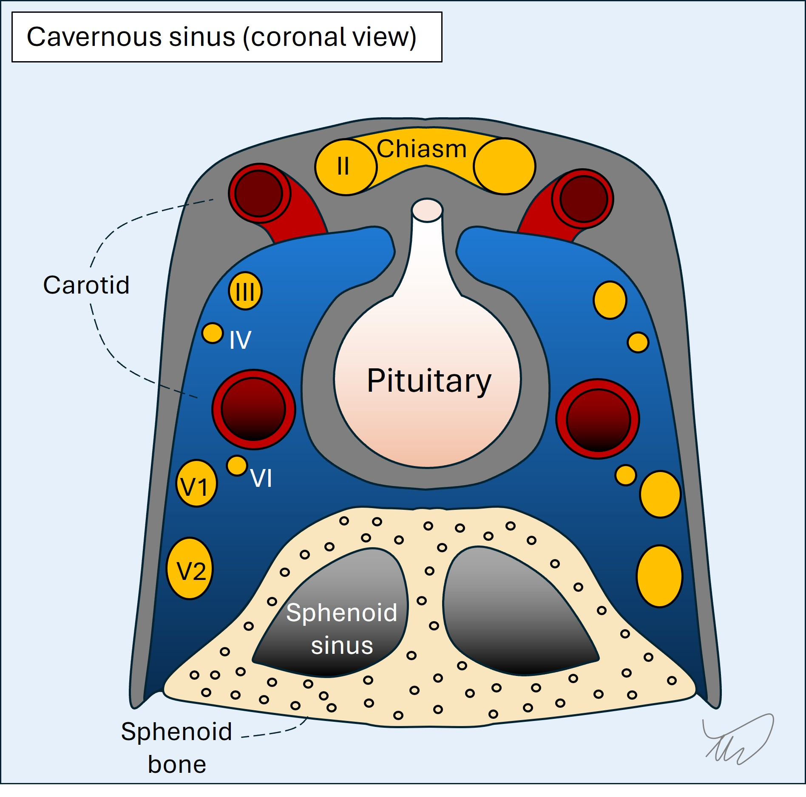 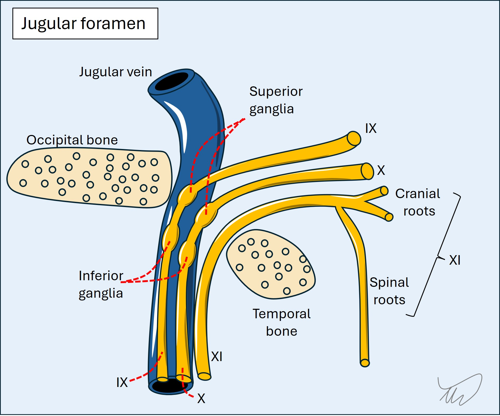
So the best way to localise cranial nerve syndromes is to look for other long tract, cerebellar or cranial nerve deficits.
However, there are other, non-focal, reasons why a patient may develop multiple cranial nerve palsies. Two major ones are: Meningeal disease - which can affect different cranial nerves at separate sites, including bilaterally, as they pass through the meningeal spaces Diseases causing pathology in multiple, separate nerves - e.g. inflammation, as seen in conditions such as Lyme disease and vasculitis.
A clue to such a process is when nerves are affected that are anatomically separate, making a focal, solitary lesion unlikely - this is obvious if two different nerves are affected on opposite sides.
There are three meningeal layers outside of the brain and spine.
In the skull, the dura has two layers - periosteal and meningeal - and they are mostly fused together but separate at points to form the venous sinuses (including the cavernous sinus). The dura surrounds the brain but also forms separating folds such as the falx and tentorium. It is firm and referred to as the pachymeninges (Greek for thick). Bridging veins traverse it from cortex to sinuses. Meningeal arteries are in the extradural space. In the spine, the dura forms ‘sleeves’ around the nerve roots. An epidural anaesthetic is injected outside the dura whereas a lumbar puncture penetrates it to access cerebrospinal fluid (CSF).
The arachnoid is thin and translucent and coats the brain and spine more closely. CSF inflates it in life. In cadavers it is empty so looks like a thin film. Major arteries perusing the brain are within the subarachnoid space, including the basilar, circle of Willis, and distal internal carotids.
The pia is very thin and directly coats the brain and spine.
The arachnoid and pia are the leptomeninges (meaning straight).
Meningeal diseases include haemorrhage either side of the dura and beneath the subarachnoid: infective, inflammatory and malignant meningitis; subdural empyema; sterile non-blood subdural collections; tumours; and arachnoiditis (including chemical).
Clues to meningeal disease include
It can also lead to hydrocephalus due to obstruction of CSF circulation.
Below the brain and tentorium lies the cerebellum, a small structure with a massive number of neurons, particularly afferent input from many systems (visual, motor, vestibular, spinal). There are numerous cerebellar outputs.
It consists of two hemispheres as well as central areas - the midline vermis and the flocculus and nodulus (vestibulocerebellum). It also has deep nuclei.
Cerebellar features include dysarthric speech (staccato, effortful, scanning), nystagmus (multidirectional and gaze evoked, often coarse and sustained unlike vestibular forms), saccadic abnormalities, broken smooth pursuit movements, ataxia in limbs (with dysmetria and intention tremor), and truncal and gait ataxia (broad based stance, short strides, frequent wobbling adjustments, and head titubation.
We can localise further - central vermis lesions cause bilateral lower limb ataxia but spare individual limbs, hemisphere lesions cause single ipsilateral limb ataxia, and vestibulocerebellar disease causes nystagmus and vertigo.
Not all cerebellar signs localise to the cerebellum - they can be due to problems with its input and output pathways. The peduncles which provide input and output can be lesioned and cause ataxia, as can the dentatorubrothalamic tract in the midbrain.
The spinal cord's 3D structure enables localisation, and we can think about lesions in terms of site, side, size and height.
Cross section (transverse/axial plane)Anterior-posterior and lateral localisation is possible due to the arrangement of the different tracts. A full thickness cord lesion will disrupt all of these, but many lesions are partial, so selectively affect some of the tracts. If the lesion is unilateral, they are affected on one side only, and the side of the body clinically affected depends on the tracts involved: most deficits are ipsilateral to the lesion, bar spinothalamic modalities which are contralateral.
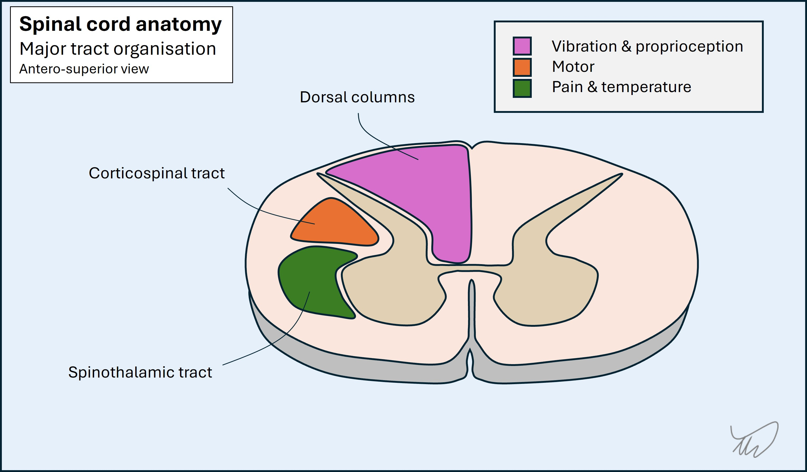The dorsal columns are at the back. They carry touch, vibration and proprioceptive sensations. Fibres ascend ipsilateral to the side of the body they innervate. The pathway crosses in the caudal medulla.
The spinothalamic tracts are lateral, adjacent to the anterior grey matter. The tracts carry pain and temperature sensation from the contralateral side of the body - fibres have already crossed at the point of entering the cord. They are unique in this regard, which is clinically useful.
The corticospinal tracts are lateral to the posterior grey matter. From a posterior-anterior perspective they are between the dorsal column and spinothalamic tracts. They carry upper motor neurons.The fibres have already crossed in the medullary pyramids, so they are ipsilateral to the side of the body they will innervate.
This means certain patterns exist for focal cord lesions
Posterior lesions impair the dorsal columns on one or both sides, leading to sensory ataxia, with loss of vibration and proprioception signals
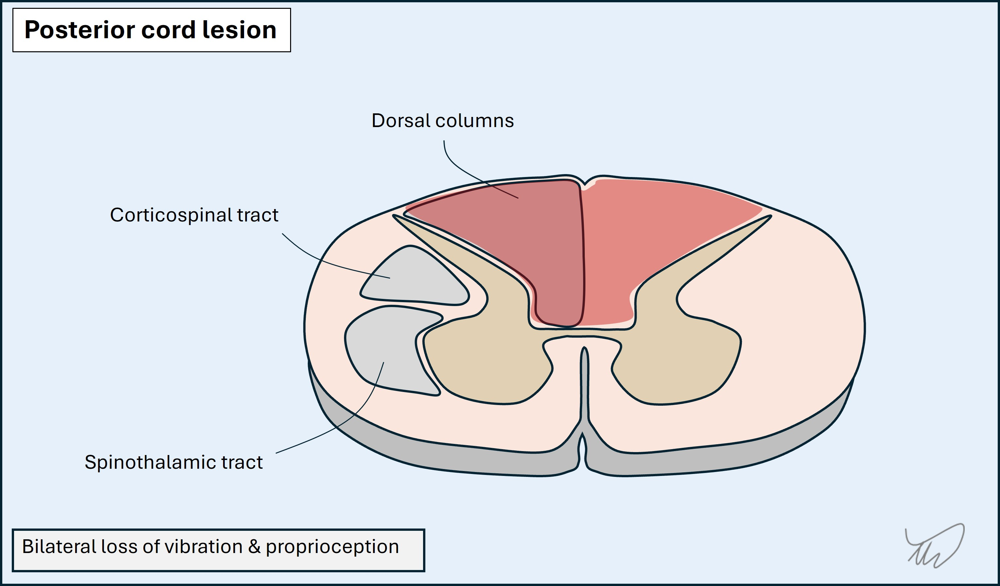Lateral lesions affect corticospinal and spinothalamic tracts. This produces a pattern of ipsilateral weakness and contralateral loss of pain and temperature sensation. If the dorsal columns on that side are also affected this is a full hemicord lesion, and the ipsilateral limb loses touch, vibration and proprioception signals - known as Brown-Sequard syndrome. This is more extensive and is uncommon.
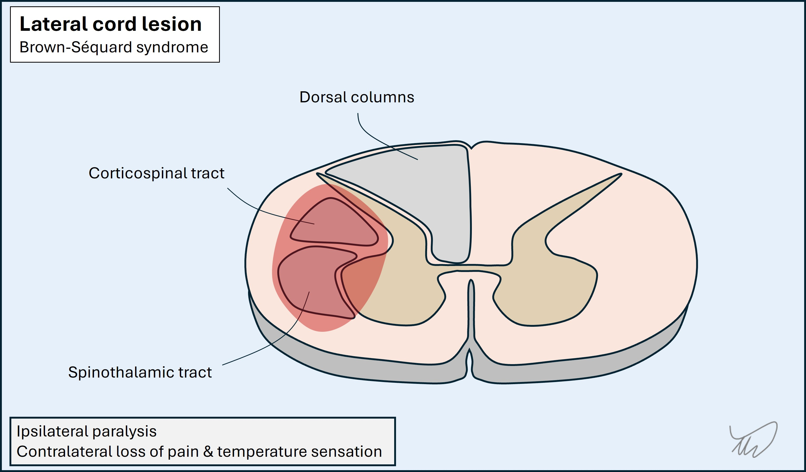Anterior lesions affect the ventral horns, spinothalamic and corticospinal tracts, but spare the dorsal columns. Lower motor neuron signs may be seen at the lesion level due to the ventral horn damage, with upper motor neuron signs below it. Examples include prolapsed discs and anterior spinal artery infarction (bilateral deficits due to single arterial input).
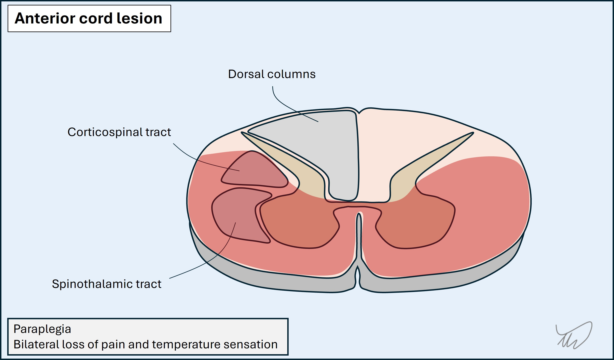Long axis - dermatomes, myotomes, reflexes, levels
Sensory fibres enter the cord via dorsal roots at particular levels. The area innervated by a given root is called a dermatome - e.g. C7 for the middle finger, or S1 for the sole of the foot.
Motor fibres leave the cord via ventral roots at at given levels. The muscle group innervated by a given root is called a myotome - e.g. T1 for thumb and finger abduction. Some muscles have input from multiple myotomes, particularly large, proximal ones. Those with single-root input are useful for localisation (see later).
The sensory and motor arcs of reflexes are innervated by one (e.g. ankle - S1) or more (e.g. biceps - C5 and C6) myotomes.
This vertical organisation of sensory inputs and motor outputs allows localisation of cord levels in the long axis.
If sensation is affected by a cord lesion, there is a cutoff at a certain level, above which sensation is intact. This is called a ‘sensory level’. By finding the highest dermatome affected we can approximate the lesion. For example:
The lesion is usually 1-2 spinal levels above the sensory level, because the fibres tend to ascend slightly before synapsing, so we can factor this into our localisation effort.
Similarly, weakness to a given myotome but intact power in higher myotomes also helps identify the level. An additional clue is that there may be lower motor neuron (LMN) signs at the level due to ventral horn damage - so we might see wasting and fasciculations in muscles at the level, and spasticity below. These signs can take time to emerge so are not always helpful in the first few hours-days. An example is a C5 cord lesion, with areflexic biceps and hyperreflexia below (e.g. triceps - C7). Sometimes this leads to inverted reflexes - the biceps is absent, the triceps hyperactive, so on tapping the biceps tendon the impulse spreads into the triceps and triggers elbow extension.
Sphincter disturbanceBladder, bowel and sexual dysfunction are prominent and disabling elements of spinal cord disease, and are affected even in early stages. These are an important clue that the problem is in the spine.
They are also key aspects of management - it can be dangerous to have urinary retention in particular, while good bowel management is essential in spinal cord disease, and sexual dysfunction has major consequences and is often overlooked during consultations - despite being treatable.
Root disease is called radiculopathy.
A root lesion produces problems in the distribution of sensory and motor innervation corresponding to it. This may include dermatomal sensory loss, and weakness in supplied muscles, with lower motor neuron signs.
Root lesions are often painful. Radicular pain has characteristics. It is neuropathic - burning, tingling or electric shock-like. It radiates in a certain distribution - e.g. down the back of the thigh to the foot in an L5 or S1 lesion (‘sciatica’). It can be provoked by nerve-stretching movements, evident in the history and demonstrable in the exam (e.g. straight leg raise test, or tests for cervical radiculopathy).
Radiculopathy is usually due to disc prolapse or compression by bony eminences such as osteophytes. It tends to happen in highly mobile segments - the cervical and lumbo-sacral regions. It is unusual to arise from discs and bones in the thoracic spine though can happen - root pain in that region may indicate other causes such as infective root inflammation (Varicella Zoster or Lyme), and cancer is always a consideration in thoracic region pain.
When pain is absent, it can require skill to differentiate a root and nerve lesion - the sensory and motor features overlap. If a muscle is weak, we can then look at another muscle which is supplied by the same root and a different nerve (or vice versa) and work out which is the problem.
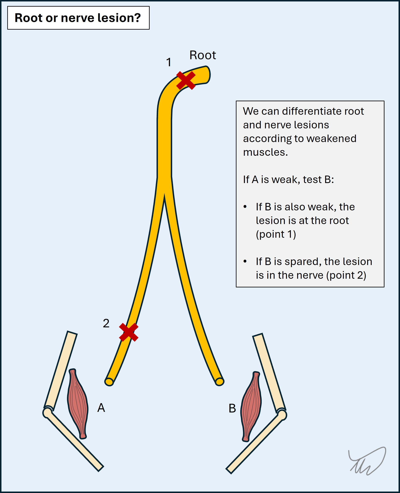For example, ankle dorsiflexion weakness produces foot drop. The key muscles are innervated by the L5 root and the common peroneal nerve. We can then test ankle inversion - also innervated by L5 but via the tibial nerve. If it is strong, the problem is in the common peroneal nerve; if weak, L5 Hip abduction is another aid, innervated by L5 and superior gluteal nerve; if weak, the problem is L5, if spared, common peroneal.
As another example, T1 supplies finger abduction via the ulnar nerve, and thumb abduction via the median nerve. A T1 lesion weakens both. An ulnar lesion weakens finger but not thumb abduction.
The process is as shown in the figure below.
Sensation can also help in some cases, as it differs somewhat between roots and nerves - but sensory examination is seldom 100% reliable: features often do not fit textbook distributions (there may be radiation and ‘overspill’), and people’s dermatomes do not necessarily fit those in a standard map. Motor signs are more reliable.
Between the roots and nerves, fibres pass through plexi. These are complex junctions with many crossing branches. It is not a simple linear path from root to peripheral nerve. Many nerves have multi-root input.
Plexus lesions (plexopathy) can be difficult to localise, but should be considered when features in a given limb do not neatly fit a single root or nerve territory for either.
Lesions are often painful, with a deep component (e.g. shoulder or hip/buttock), worse at night.
It may be difficult to distinguish between a painful plexopathy and radiculopathy on clinical grounds - nerve conduction studies may be necessary to place the lesion.
Chronically, plexus pathologies produce recognisable patterns of deficits, for example the ‘waiter’s tip’ position in Erb’s palsy.
Peripheral nerve disorders are classified according to how many nerves are affected: one, several or many.
MononeuropathyA lesion of an individual peripheral nerve will produce deficits in its innervated territory - usually weakness and sensory loss, although some mononeuropathies are selective, for example:
Several muscles are involved for each of the major nerves but it is important to know key ones, such as those innervated by the median, ulnar and common peroneal nerves. The approach to distinguishing root and nerve lesions is covered above.
As above, sensation isn’t always reliable - things don’t always fit textbook maps, and numbness and pain may ‘overspill’ - particularly in carpal tunnel where they may radiate far beyond the median territory. It can be difficult to distinguish root and nerve-related sensory deficits, but splitting of the ring finger is useful - it indicates an ulnar lesion, as C8 radiculopathy doesn’t tend to split the digit. (picture). Motor examination is more useful however; in C8 radiculopathy other median-innervated muscles are weak (e.g. finger flexors), and other ulnar-innervated muscles with a T1 root will be spared (e.g. finger abductors).
An additional task is localising the lesion site, proximal to distal. This requires knowledge of the motor and sensory branches and where they stem from. By assessing the distribution of weakness and/or numbness we can establish the level, particularly for nerves in the upper limbs. The more proximal the lesion, the more deficits. For example, ulnar lesions distal to the wrist do not affect palmar sensation, supplied by a branch proximal to the wrist. High radial lesions have more extensive effects - e.g. forearm sensory loss, or even triceps weakness if very high (e.g. axilla). This principle is shown in the diagram below:
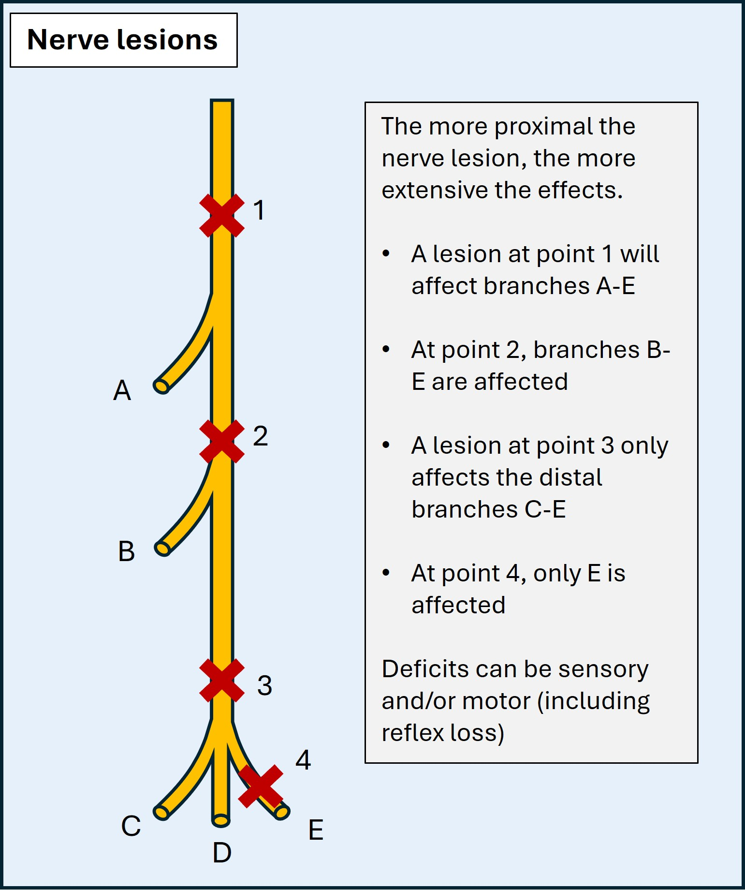Mononeuropathies are often uncomfortable, with tingling and pain. This is particularly present at night, and in provocative positions which irritate the nerve - elbow flexion in ulnar neuropathy (e.g. driving, reading a book, leaning on the arm), wrist flexion in median neuropathy (gripping, typing), and crossing legs in common peroneal neuropathy. We can demonstrate this by asking the patient to adopt certain positions (e.g. Phalen’s test) or tapping over the nerve (Tinel’s test).
Mononeuropathies happen for lots of reasons.Compression is commonest - whether from entrapment against adjacent anatomical structures, most commonly in carpal tunnel syndrome, or from extrinsic compressive force, for example the radial nerve being compressed by crutches or the back of a chair (‘Saturday night palsy’), or a long lie on the ground (common peroneal, tibial, or sciatic nerve). Iatrogenic pressure palsies from positioning during surgical procedures are another example (e.g. obstetric stirrups). This is often detected in the recovery phase with concern over peri-operative stroke.
Multiple neuropathiesSome conditions feature multiple mononeuropathies. Two examples are important.
1. Mononeuritis multiplex
This is typically due to vasculitis, with acute onset of multiple neuropathies which are usually painful.
2. Compressive palsies
Some people are more vulnerable to compressive mononeuropathies and may develop several:
Polyneuropathy
In polyneuropathy, many nerves are damaged, and the clinical features are diffuse and bilateral. Neuropathy usually has sensory and motor features though some neuropathies are selective, for example acute motor axonal neuropathy (AMAN; rapid-onset widespread weakness) or small-fibre neuropathy (distal-predominant pain and numbness).
The common pattern is ‘length-dependent’: the longest nerves are first affected, i.e. those innervating the toes. Over time the neuropathy ‘ascends’, as shorter nerves become involved - affecting feet, then shins, and by the time it reaches the knees the fingertips become involved, then the hands - ‘glove & stocking’ pattern.
It is quite unusual for neuropathy to ascend as high as the thighs and spare the hands, as the nerves to the hands are of similar length as those to the thighs. If the picture progresses to the proximal thighs and the upper limbs are spared this is evidence against neuropathy and a spinal cord or cauda equina lesion should be suspected. If it reaches the lower trunk then the lesion is in the spinal cord.
Some neuropathies are not length-dependent, particularly inflammatory demyelinating forms, which often involve proximal segments and roots in addition to distal areas - for example Guillian-Barré syndrome (GBS) and its chronic equivalent, chronic inflammatory demyelinating polyradiculoneuropathy (CIDP). Inflammatory neuropathies may be asymmetrical and patchy, with some segments ‘skipped’, and they may involve cranial nerves - for example, in GBS, facial palsy is common, often bilateral.
The motor nerves connect to the muscle at the NMJ and communicate via acetylcholine. NMJ disorders produce weakness with sensation intact.
They are characterised by fatiguability, because there is initial transmission but it is insufficient to lead to sustained contraction with a given level of force. This is evident from the history, with worsening of symptoms on sustained activity (e.g. attempting to hang up a batch of laundry), and with symptoms generally being worse in the evening compared to the morning (diurnal variability). It can also be shown on examination, as a movement starts strong but fatigues on repeated testing - for example sustained upgaze leading to ptosis and double vision after 15-30 seconds.
The distribution is characteristic and the opposite of neuropathy. There is prominent involvement of ocular muscles, with double vision and ptosis. Bulbar muscles are involved, with difficulty chewing, swallowing, and slurring of speech. The muscles involved in breathing may become affected. Proximal limb muscles are also affected, causing difficulty with stairs, rising from chairs, and lifting objects overhead; neck extensors can also be weak, with head drop arising. However, the distal muscles are spared; patients do not have issues with fine tasks involving dexterity (e.g. doing buttons).
The best-known NMJ disorder is myasthaenia gravis, due to autoimmune destruction of the acetylcholine receptors on the muscle. Other disorders include botulism, where a bacterial toxin inhibits release of acetylcholine into the synapse, and Lambert-Eaton, a pre-synaptic autoimmune problem which features proximal weakness similar to myopathy but also autonomic dysfunction and reduced reflexes (which improve after exertion).
NMJ disorders can be life-threatening, in many cases requiring admission to intensive care units.
Muscle disease is called myopathy.
There are many - but the general theme is proximal weakness, with difficulties in the same situations as NMJ disease (stairs, chairs, overhead actions). Unlike NMJ disease it doesn’t tend to involve the ocular or bulbar segments prominently, and doesn’t feature fatiguability. Sensation is spared.
There are exceptions and the above is just a general theme, true of the commoner myopathies.
However, some myopathies feature ocular or facial involvement, for example facioscapulohumeral dystrophy (FSHD) or oculopharyngeal muscular dystrophy (OPMD). Some produce distal rather than proximal weakness - distal myopathy is an entire category of disease.
Some affect proximal, distal and facial/bulbar segments, e.g. inclusion body myositis (IBM) and myotonic dystrophy (DM; the acronym is from its Latin name).
Myopathy presentations vary in tempo, as with any other lesion site. While many are gradually progressive, at opposite extreme are life-threatening presentations: traumatic, toxic and some metabolic forms sometimes present dramatically with pain and muscle necrosis - rhabdomyolysis - and can cause acute renal failure due to tubular myoglobin accumulation.
In general, for a motor-only problem affecting proximal limb muscles and with intact reflexes - think myopathy.
Having considered how lesions at different anatomical sites manifest, we can now move on to What?